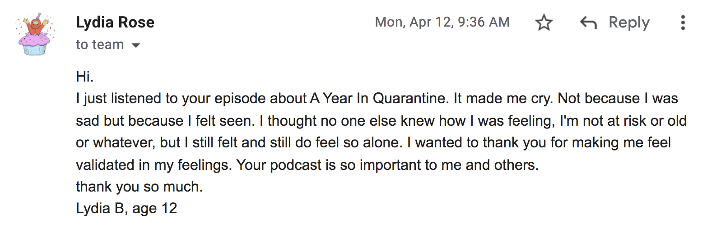
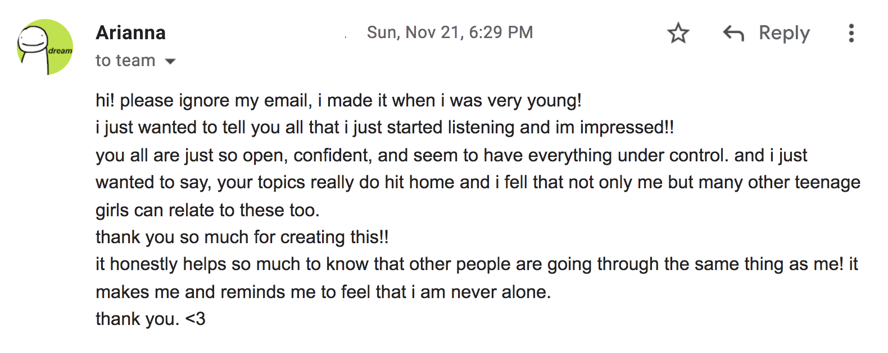
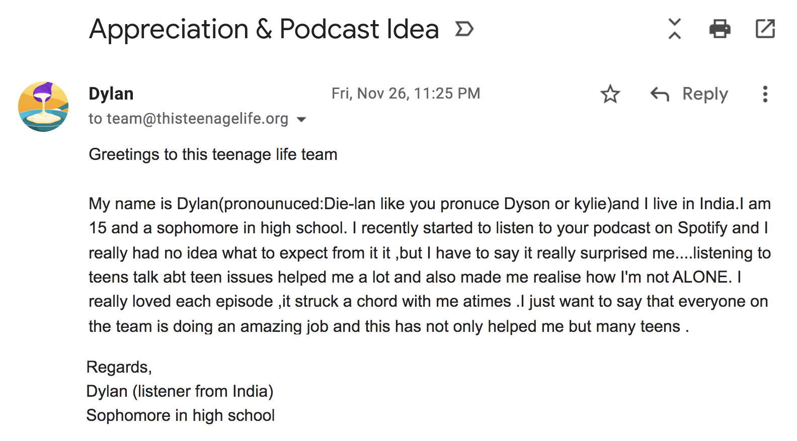
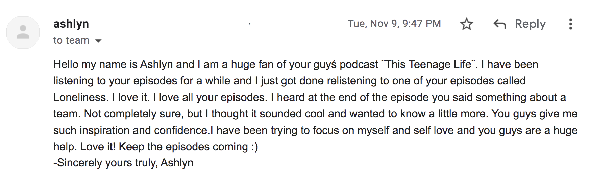
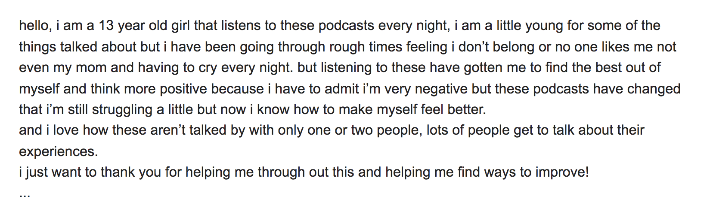
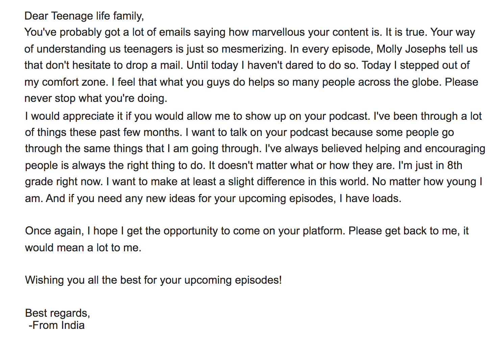
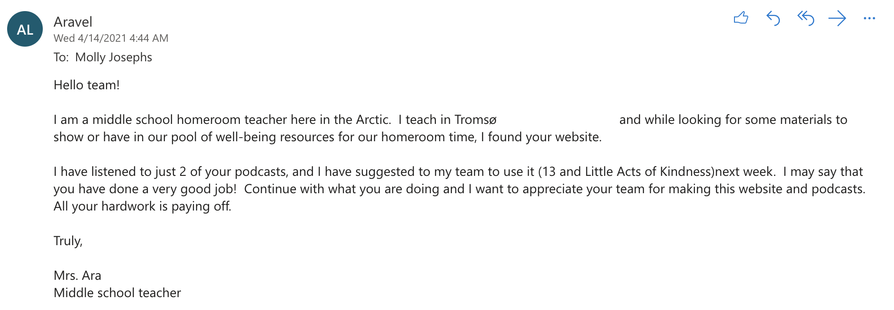
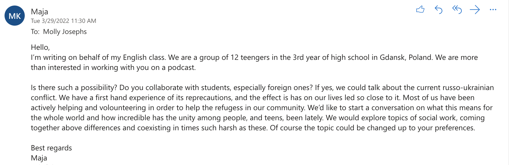
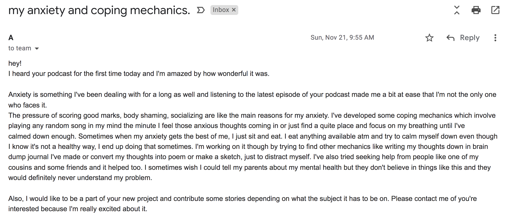

 <section id="testimonies">
        <div style="left:25%; position:relative; width:75%">
            <span class="sectionTitle" style=" font-size:6vw;">
                Listener Testimonies</span><br><br>
            <span style="color:rgb(88, 88, 88);
                font-family:'Chelsea Market', cursive; font-size:1.8vw;">Almost every day we receive emails from listeners about how the show helps them feel less alone. Most of these listeners are invited to join or dialogue groups or contribute to our blog. <br><br>In fact, <i>most</i> of the current TTL team is formed from listeners who reached out and emailed us. Here are just a few examples of the emails we receive.</span>
            <br><br>
            <br><br>
            <br><br>
            
            <br><br>
            <br><br>
            <br><br>
            
            <br><br>
            
            <br><br>
            
            <br><br>
            
            <!--   -->
        </div>
    </section>